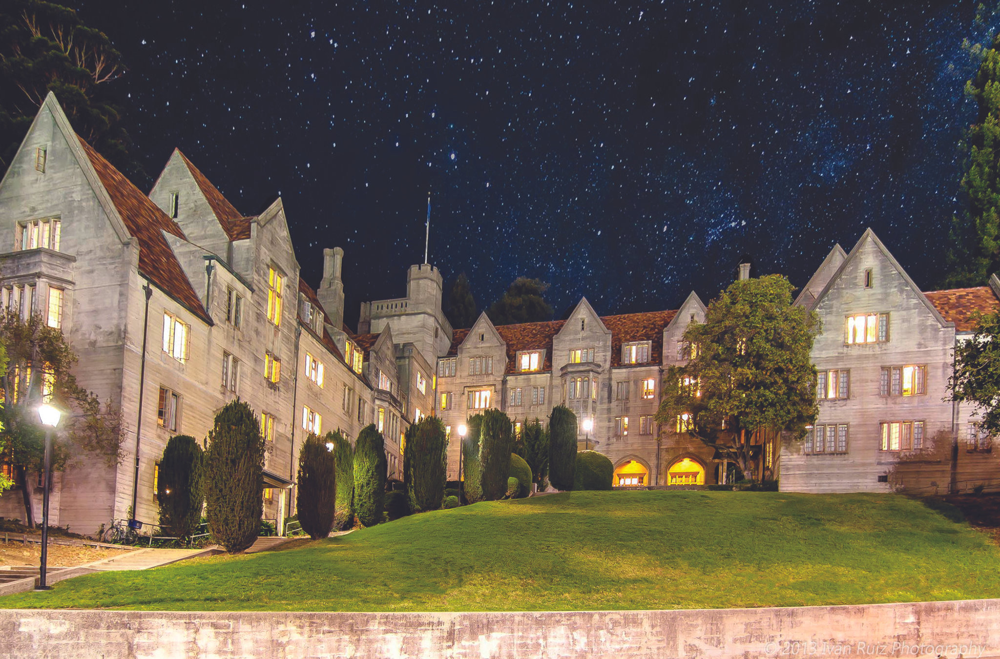
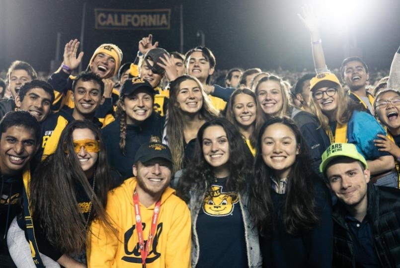
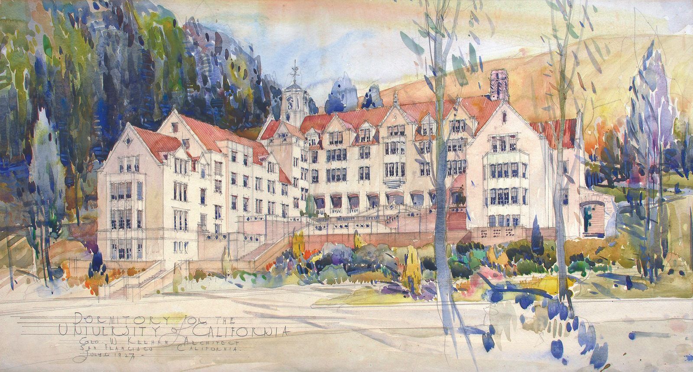

Est. 1929 · The residential college of UC Berkeley
A college within
the university.
One hall, 188 students, and all four class years living, eating and learning together.
Celebrating 98 years
The Hall is full again.
The Hall is bursting with activities as students return for the new academic year. With the class distribution close to the ideal of about a quarter from each year — freshmen, sophomores, juniors and seniors — we are once again honored to have an enthusiastic group of 188 students roaming the halls.
- 1929
- First opened its doors
- 188
- Residents this year
- 4
- Class years, about 25% each
- 2016
- Fully renovated

About Bowles
Small enough to know everyone.
Bowles Hall is a small, diverse community within UC Berkeley, designed to help residents learn to embrace challenges and seek solutions to the problems they will face in life beyond Berkeley.
Read more about the college
Bowles History
Nearly a century on the hill.
First opened in 1929, Bowles Hall is the only residential college at UC Berkeley. After an extensive renovation in 2016, it now offers a coed, four-year college home for Berkeley students.
Read the history

Apply to Bowles
Make Bowles your college home.
We invite incoming freshmen, transfer students and continuing Berkeley students to apply. Summer residency options are also available.
Explore the Hall